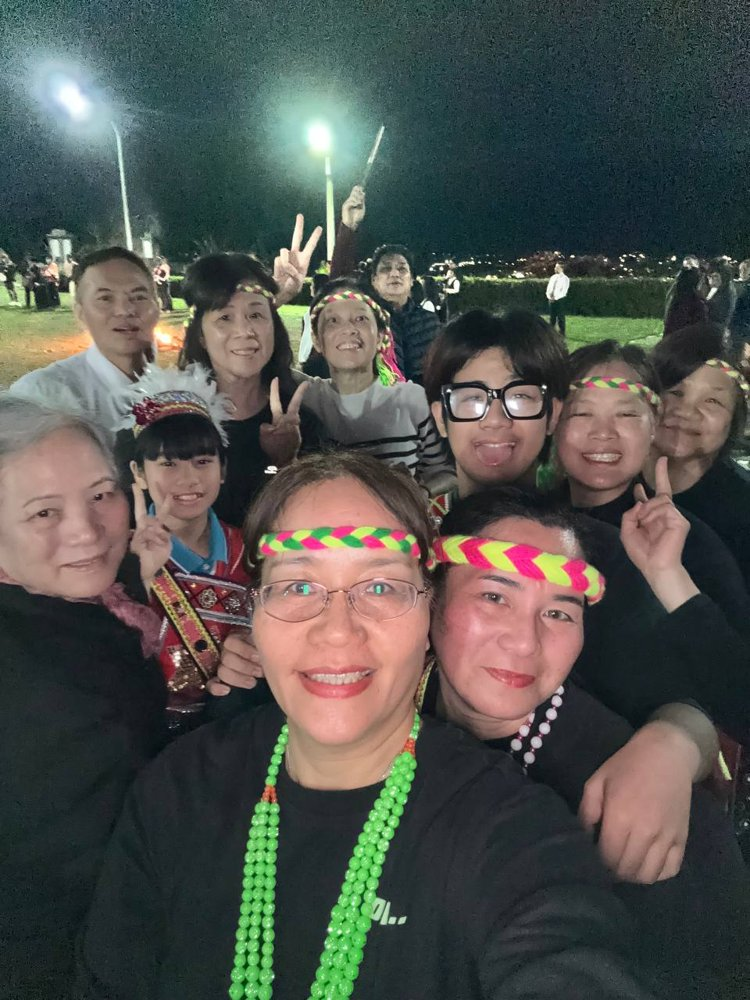
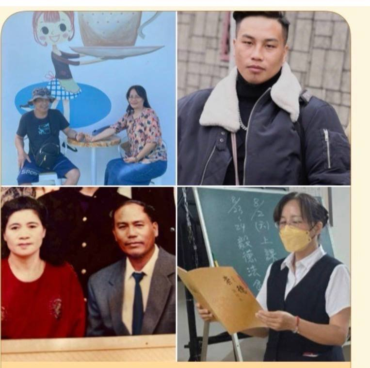

後學張菊花於民國94年在台東池上闡德宮開智慧求道。求道後，因工作及生活忙碌，將近十年的時間沒有回佛堂，完全沒有參與道場。
當初因緣成熟，感謝引師表嫂林桂郁 壇主引薦帶著後學前往佛堂求道。求道後雖然一度因工作繁忙而離開道場,之後離開花蓮移居到龍潭;直到民國105年3、4月的一個機緣，一切都要感謝天恩師德,冥冥之中安排殊勝因緣在樹林火車站巧遇本壇(正德佛堂)的葉成春 講師及賢伉儷林桂鳳 講師，非常感恩講師他們夫妻倆,重新接起了後學的一條金線(佛緣),苦心一路安排後學去台北崇德佛院的2天法會,葉講師在黑夜中不辭辛勞的遠從新竹開車專程來龍潭載後學到壢一區第三責任壇倚德佛堂系列的許明雄 講師、張天美 講師所屬的許氏佛堂,便開啟了後學五年進修班、講培班、講師班、學習十組運作之服務組善歌、炊事與修辦.在研究班第四年也順利立了清口愿,讓後學再次回到佛堂;深刻體會「佛緣不斷，道心不滅」。上天並沒有放棄後學，後學深信是老師把迷途的徒兒找回,老師有聽到徒兒的心聲,因為在巧遇的一星期前,後學很特別的一直想也一直出現在腦海中不太熟沒有交過談的桂鳳講師。
研究班期間後學先生一直要後學一起回鄉(花蓮)定居,在李順隆點傳師慈悲.風月麗講師以及倚德系列佛堂的講師.前賢們鼓勵成全,自己也堅定地跟先生商量後,也如願讓後學完成講師班後再回花蓮。後學安排就在後學與家人回花蓮的前一晚(113年12月9日)在李順隆點傳師慈悲.風月麗講師、許庭宛未來講師苦口婆心的幫忙下 ,隔天早上陳兄與先生的二哥也得以順利求了道。(後學的兒子在112年5月11日求道)
感謝天恩師德感謝道場因有道的信念與各位點傳師及講師 、前賢的的厚愛、提攜鼓勵，讓後學在修辦路、生活中能夠安住身心，勇敢面對人生的考驗。
再次感謝一路的不吝指引、相伴與耐心對後學。
修道讓後學學會反省自己，遇事不再只看別人的不是，而是檢討自己；也學會以感恩、包容、慈悲的心待人處事。
現今回到了花蓮玉里(定居瑞穗)繼續承擔使命,在道程中,唯有需要不斷學習、精進修辦以真誠的心服務(成全)眾生,以謙卑的心學習、盡心了愿,廣結善緣，不辜負天恩師德、講師前賢們大家的期許。
＊後學快馬加鞭能夠在今年115度如願金馬獎設立家庭佛堂＊
給正德佛堂五十週年一句祝福的話
正法常弘 德澤群生
道務宏展 廣度有緣
誠摯祝賀正德佛堂五十週年誌慶，道務昌隆、人才輩出，前賢後學同心同德，
共沐天恩師德，讓正德精神薪火相傳，廣渡更多有緣眾生。
後學 張菊花